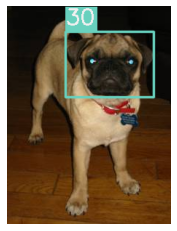
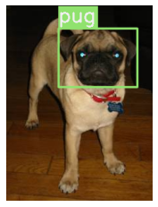
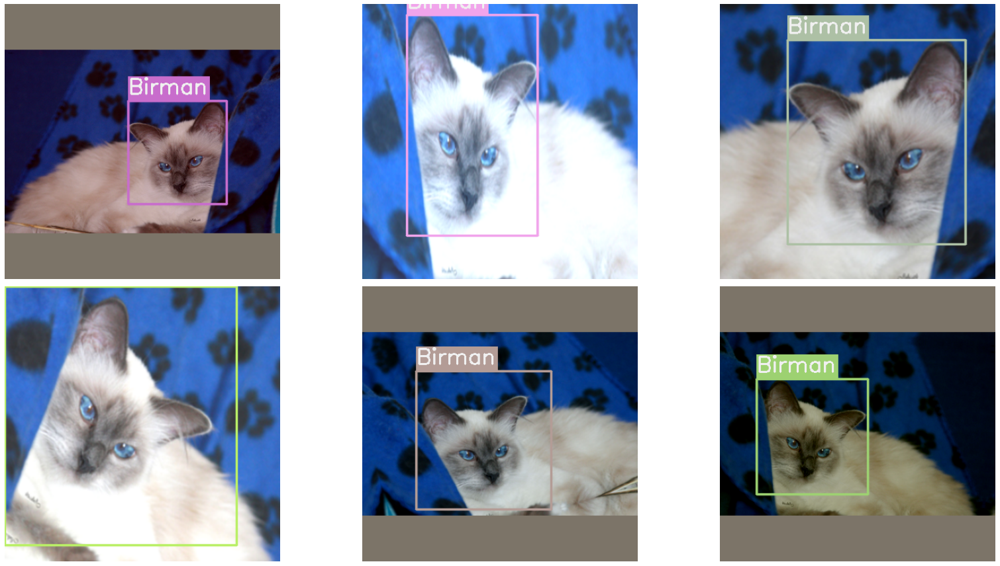
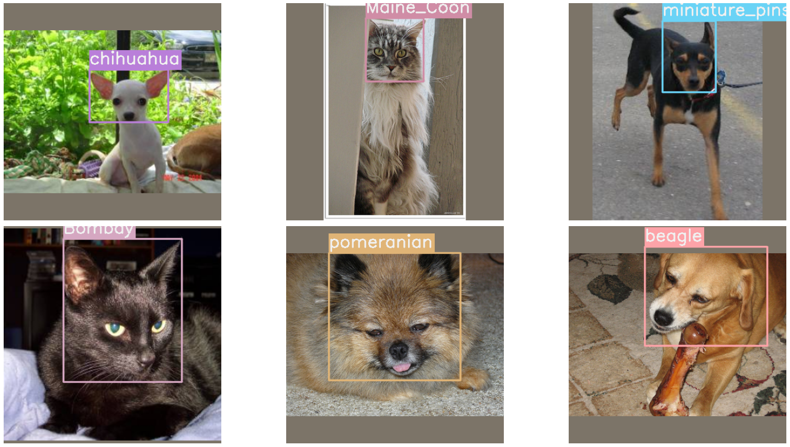
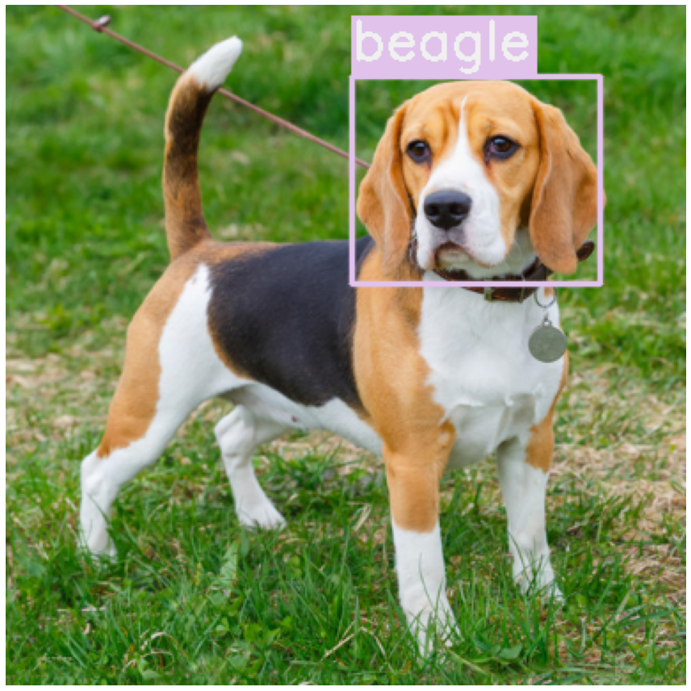

Getting started with IceVision

Why IceVision?
-
IceVision is an Object-Detection Framework that connects to different libraries/frameworks such as fastai, Pytorch Lightning, and Pytorch with more to come.
-
Features a Unified Data API with out-of-the-box support for common annotation formats (COCO, VOC, etc.)
-
The IceData repo hosts community maintained parsers and custom datasets
-
Provides flexible model implementations with pluggable backbones
-
Helps researchers reproduce, replicate, and go beyond published models
-
Enables practioners to get moving with object detection technology quickly
Introduction
This tutorial walks you through the different steps of training and using a model.
The IceVision Framework is an agnostic framework. To demonstrate this we will train and use our model with both the fastai, and pytorch-lightning libraries.
If you are using Google Colab, the GPU runtime should be enabled, but if you experience problems when training your model, you may want to check this.
Runtime -> Change runtime type -> Hardware accelerator dropdown -> GPU
Install icevision and icedata
!pip install icevision[all]
!pip install icedata
Import the package
from icevision.all import *
import icedata
Datasets
IceVision provides handy methods to load a dataset, parse annotations, and more.
In the example below, we work with the PETS dataset to detect cats and dogs in images and identify their species. Loading the PETS dataset is one line code.
data_dir = icedata.pets.load_data()
data_dir
Parser
The Parser is one of the most important concepts in IceVision. It allows us to work with any annotation format.
The basic job of the parser is to convert a custom format to something the library can understand. You might still need to create a custom parser for your own dataset. Fear not! Creating parsers is easy. After you've finished this tutorial, check this custom parser documentation to understand how to.
IceVision already provides a parser for the Pets Dataset
class_map = icedata.pets.class_map()
class_map
parser = icedata.pets.parser(data_dir, class_map)
Parse the data
Next we parse() the dataset using the data splitter. This returns returns 2 lists of records: one for training and another for validation. Behind the scenes we shuffle the data and proceed with a 80% train 20% valid split.
train_records, valid_records = parser.parse()
What's a record?
A record is a dictionary that contains all parsed fields defined by the parser used. No matter what format the annotation has, a record has a common structure that can be connected to different DL frameworks (fastai, Pytorch-Lightning, etc.)
Visualize the training data
We can show one of the records (image + box + label). This helps to understand what is in the dataset and check that the boxes and labels make sense.
show_record(train_records[1])

We can also display the label instead of its identifier by providing the class_map.
show_record(train_records[1], class_map=class_map)

Of course, we often want to see several images with their corresponding boxes and labels.
records = train_records[:6]
show_records(records, ncols=3, class_map=class_map)

Transforms
Data transformations are an essential part of the training pipeline. There are many transformation libraries available including: albumentations, solt, and torchvision.
IceVision supports the widely used albumentations library out-of-the-box.
It is possible to integrate other transform libraries. You just need to inherit and override all abstract methods of the Transform class. We plan to add more to future versions in response to community feedback.
It is typical to use different transformations for the training and validation datasets. The valid_tfms apply to the validation set. These are minimal - just resizing the image and normalising it. The train_tfms typically do data augmentations such as zoom, crop, lighting adjustments, horizontal flips, and so on. These help to reduce the required training set size, reduce overfitting, and produce a more robust model. Icevision makes this easy - all of the bounding boxes are adjusted if needed. For example, zooming in will make the bounding boxes larger. Crops will not cut any bounding boxes.
The presize parameter helps to improve the resulting image quality. See the Fast AI Book for more details.
The A.Normalize function applies a set of default normalizations that have been refined over the years on the Imagenet dataset.
presize = 512
size = 384
valid_tfms = tfms.A.Adapter([*tfms.A.resize_and_pad(size), tfms.A.Normalize()])
train_tfms = tfms.A.Adapter([*tfms.A.aug_tfms(size=size, presize=presize), tfms.A.Normalize()])
Dataset
The Dataset class combines the records and transforms.
To create a Dataset, we just need need to pass the parsed records from the previous step along with the transforms.
train_ds = Dataset(train_records, train_tfms)
valid_ds = Dataset(valid_records, valid_tfms)
What does the Dataset class do?
- Prepares the record: For example, in the record we just have a filename that points to the image, it's at this stage that we open the image.
- Applies the pipeline of transforms to the record prepared in the previous step
Lazy transforms
Transforms are applied lazily, meaning they are only applied when we grab (get) an item.
This means that, if you have augmentation (random) transforms, each time you get the same item from
the dataset you will get a slightly different version of it.
Important
Because we normalized our images with imagenet_stats, when displaying transformed images, we need to denormalize them.
The show_sample function receives an optional argument called denormalize_fn that we can be passed: In our case, we pass denormalize_imagenet.
Displaying the same image with different transforms
samples = [train_ds[3] for _ in range(6)]
show_samples(samples, ncols=3, class_map=class_map)

Model
In this tutorial, we are learning to predict bounding boxes and classes, but not performing image segmentation. We will use the FasterRCNN model.
To create the model, we need to specify how many classes our dataset has. This is the length of the class_map. Note that the class_map includes a value for "background" with index 0, which is added behind the scenes by default.
model = faster_rcnn.model(num_classes=len(class_map))
DataLoader
Each model has its own dataloader (a pytorch DataLoader) that could be customized: the dataloaders for the RCNN models have a custom collate function.
train_dl = faster_rcnn.train_dl(train_ds, batch_size=16, num_workers=4, shuffle=True)
valid_dl = faster_rcnn.valid_dl(valid_ds, batch_size=16, num_workers=4, shuffle=False)
Training
IceVision is an agnostic framework meaning it can be plugged to multiple DL frameworks such as fastai, and pytorch-lightning.
You could also plug it into a new DL frameworks using your own custom code.
Metrics
Metrics are essential for tracking the model progress as it's training.
Here we are going to be using the well established COCOMetric, which reports on the mean average precision of the predictions.
metrics = [COCOMetric(metric_type=COCOMetricType.bbox)]
Training with fastai
Creating a Learner object
Creating a fastai compatible Learner using the fastai interface.
learn = faster_rcnn.fastai.learner(dls=[train_dl, valid_dl], model=model, metrics=metrics)
Training the RCNN model using fastai fine_tune() method
The fastai fine_tune method is useful when you have a pre-trained model, which we are using. It does an initial epoch where it freezes everything except its final layers. It then carries on for the indicated number of epochs using a differential learning rate to train the whole model. It adjusts the learning rate both across the layers of the model as well as across the epochs. This can give excellent results with reduced training time.
In September 2020, if everything is working, the model might require around 3 minutes per epoch on a free Google Colab server.
learn.fine_tune(10, 1e-4)
Training with Pytorch-Lightning
Creating a Pytorch-Lightning (PL) model class
It inherits from RCNNLightningAdapter and implements the method PL configure_optimizers.
class LightModel(faster_rcnn.lightning.ModelAdapter):
def configure_optimizers(self):
return SGD(self.parameters(), lr=1e-4)
light_model = LightModel(model, metrics=metrics)
Training the RCNN model using PL Trainer.fit() method
trainer = pl.Trainer(max_epochs=10, gpus=1)
trainer.fit(light_model, train_dl, valid_dl)
Visualize results
To quickly visualize the results of the model on a specific dataset use show_results:
faster_rcnn.show_results(model, valid_ds, class_map=class_map)

Inference
Load a model
Training the model with fastai using fine_tune twice and I got led the the following results:
train_loss: 0.06772
valid_loss: 0.074435
Using our Trained Weights
If you don't want to train the model, you can use our trained weights that we publicly available: You can download them with torch.hub:
weights_url = "https://github.com/airctic/model_zoo/releases/download/m3/pets_faster_resnetfpn50.zip"
state_dict = torch.hub.load_state_dict_from_url(weights_url, map_location=torch.device("cpu"))
Note
Typically inference is done on the cpu, this is why we specify the paramater map_location to cpu when loading the state dict.
Let's recreate the model and load the downloaded weights:
model = faster_rcnn.model(num_classes=len(class_map))
model.load_state_dict(state_dict)
model.cuda()
The first step for prediction is to have some images, let's grab some random ones from the validation dataset:
11.3- Predict all images at once
If you don't have too many images, you can get predictions with a single forward pass.
In case your images don't fit in memory simultaneously, you should predict in batches, the next section shows how to do that.
For demonstration purposes, let's take download a single image from the internet and see how our model performs on it.
IMAGE_URL = "https://petcaramelo.com/wp-content/uploads/2018/06/beagle-cachorro.jpg"
IMG_PATH = "tmp.jpg"
download_url(IMAGE_URL, IMG_PATH)
img = open_img(IMG_PATH)
show_img(img)
<AxesSubplot:>
Try other images!
Change IMAGE_URL to point to another image you found on the internet.
Just be sure to take one of the breeds from class_map, or else the model might get confused.
Whenever you have images in memory (numpy arrays) you can use Dataset.from_images.
We're going to use the same transforms we used on the validation dataset.
infer_ds = Dataset.from_images([img], valid_tfms)
For any model, the prediction steps are always the same, first call build_infer_batch and then predict.
For faster_rcnn we have detection_threshold, which specifies how confident the model should be to output a bounding box.
batch, samples = faster_rcnn.build_infer_batch(infer_ds)
preds = faster_rcnn.predict(model=model, batch=batch)
For displaying the predictions, we first need to grab our image from samples. We do this instead of using the original images because transforms may have been applied to the image (in fact, in this case, a resize was used).
imgs = [sample["img"] for sample in samples]
Now we just need to call show_preds, to show the image with its corresponding predictions (boxes + labels).
show_preds(imgs=imgs, preds=preds, class_map=class_map, show=True)

11.4- Predicting a batch of images
Instead of predicting a whole list of images at one, we can process a small batch at the time: This option is more memory efficient: We use infer_dataloader
Had we have a test dataset, we would have maken our predicition using the batch technique mentionned here above. As an illustrative example, we will predict all images belonging to the validation dataset using the following approach:
infer_dl = faster_rcnn.infer_dl(valid_ds, batch_size=16)
samples, preds = faster_rcnn.predict_dl(model=model, infer_dl=infer_dl)
Same as before, we grab our images from samples.
imgs = [sample["img"] for sample in samples]
Let's show the first 6 predictions:
show_preds(
imgs=imgs[:6],
preds=preds[:6],
ncols=3,
class_map=class_map,
show=True,
)

Happy Learning!
If you need any assistance, feel free to join our forum.